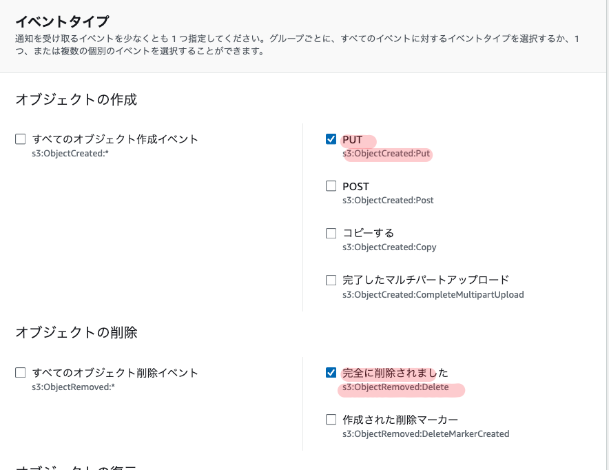

Snowflakeのディレクトリテーブルとメタデータ自動更新
はじめに
AWSのS3バケットとSnowflakeのディレクトリテーブル機能を使って、S3上のデータファイルの変更を自動的にSnowflakeのメタデータに反映させる方法についてやってみる。S3バケットへのファイルの追加・更新・削除を検知し、それをトリガーにしてSnowflakeのディレクトリテーブルのメタデータを最新の状態に保つことができるようになります。
ディレクトリテーブルとは
ディレクトリテーブルは、Snowflakeのステージ上のデータファイルに関するメタデータを格納するオブジェクトで、外部テーブルに似た概念で、ステージ内のファイルのパス、サイズ、最終更新日時などの情報を保持する
ディレクトリテーブルを使うことで、以下のような非構造化データの処理が可能になります:
- ステージ上の全ファイルのリストとメタデータのクエリ
- 非構造化データと構造化データを組み合わせたビューの作成
- ファイル処理パイプラインの構築
ディレクトリテーブルのメタデータは、クラウドストレージのイベント通知と連携することで自動更新できます。これにより、ステージ上のファイルの追加・更新・削除を常にメタデータに反映させておくことが可能です。
今回はAWS上で実施してみる
前提条件
- AWSアカウントとS3バケットが作成済みであること
- Snowflakeアカウントが作成済みであること
- S3バケットとSnowflakeを連携するためのストレージ統合が設定済みであること
手順
ステップ1: ディレクトリテーブル付きの外部ステージを作成
まず、S3バケットを指すSnowflakeの外部ステージを、ディレクトリテーブルオプションを指定して作成する
CREATE STAGE mystage
URL='s3://mybucket/path/'
STORAGE_INTEGRATION = my_storage_int
DIRECTORY = (ENABLE = true, AUTO_REFRESH = true);
- URLにはS3バケットのパスを指定
- STORAGE_INTEGRATIONにはあらかじめ作成したストレージ統合オブジェクトを指定
- DIRECTORYオプションでENABLE=trueとAUTO_REFRESH=trueを指定し、ディレクトリテーブルを有効化
ステップ2: 通知用SQSキューのARNを確認
ディレクトリテーブルの更新に使われるSQSキューのARN(Amazon Resource Name)を確認。
DESC STAGE mystage; を実行し、出力内の directory_notification_channel の値をコピーする。
ステップ3: S3バケットのイベント通知を設定
AWSマネジメントコンソールからS3バケットのプロパティ画面を開き、「イベント通知」の設定を実施
- 「イベント」で
s3:ObjectCreated:Putとs3:ObjectRemoved:Deleteを選択

- 「送信先」で
SQS キューを選択し、ステップ2でコピーしたSQSキューのARNを指定
これで、S3バケットへのオブジェクトの作成・削除が、指定したSQSキューへ通知されるようになる。
ステップ4: 初回のメタデータ更新を手動で実行
ALTER STAGE mystage REFRESH; コマンドを実行して、現時点でのS3バケットの状態をディレクトリテーブルに反映させる。この初回の手動更新が完了すると、以降はS3のイベント通知をトリガーに自動更新が行われるようになる。
ステップ5: アクセス権限の設定
ディレクトリテーブルをクエリするために必要な権限を、追加のロールに付与します。
- データベースとスキーマに対する
USAGE権限 - ステージに対する
USAGEとREAD権限 - ファイルフォーマットに対する
USAGE権限
ディレクトリテーブルの活用
ディレクトリテーブルのクエリ
ディレクトリテーブルに対してSELECT文を実行することで、ステージ上の全ファイルのリストと、各ファイルのメタデータを取得できます。
SELECT * FROM DIRECTORY(@mystage);
これにより、以下のような列が返されます。
- RELATIVE_PATH : ファイルへの相対パス
- SIZE : ファイルサイズ(バイト)
- LAST_MODIFIED : 最終更新日時
- FILE_URL : ファイルへのSnowflake URL
- etc.
条件によるフィルタリングも可能です。
-- 100KBより大きいファイルのURLを取得
SELECT FILE_URL FROM DIRECTORY(@mystage) WHERE SIZE > 100000;
-- CSVファイルのURLを取得
SELECT FILE_URL FROM DIRECTORY(@mystage) WHERE RELATIVE_PATH LIKE '%.csv';
ユースケース1:非構造化データのビュー作成
ディレクトリテーブルを他のテーブルと結合することで、ファイルのメタデータと他の情報を組み合わせた非構造化データのビューを作成できます。
例えば、PDFファイルを格納したステージ my_pdf_stage と、それらのメタデータテーブル report_metadata があるとします。 FILE_URLをキーにしてJOINすることで、以下のようなビューが作成できます。
CREATE VIEW reports_information AS
SELECT
file_url AS report_link,
author,
publish_date,
approved_date,
geography,
num_of_pages
FROM directory(@my_pdf_stage) s
JOIN report_metadata m
ON s.file_url = m.file_url;
このビューには、各PDFファイルのURLと、著者や公開日などの関連メタデータが含まれます。
ユースケース2:データ処理パイプラインの構築
ディレクトリテーブルをSnowflakeの他の機能と組み合わせることで、データ処理パイプラインを構築することもできます。
例えば、以下のようなステップでPDFファイルを処理するシンプルなパイプラインが作れます:
- ディレクトリテーブル付きのステージ
my_pdf_stageを作成 - ディレクトリテーブルの変更を検知するストリーム
my_pdf_streamを作成 - PDFからデータを抽出するUDF
PDF_PARSEを作成 - 抽出したデータを格納するテーブル
prod_reviewsを作成 - ストリームをトリガーにタスク
load_new_file_dataを作成し、UDFを実行してテーブルにデータをロード
ステージにPDFを追加すると、タスクが自動実行されてテーブルにデータが挿入されます。 prod_reviews をクエリすれば、PDFから抽出されたデータを参照できます。
ディレクトリテーブルでのストリームの作成
ディレクトリテーブルの変更を検知するために、Snowflakeストリームを作成することもできます。
CREATE STREAM dirtable_mystage_s ON STAGE mystage;
ストリームにデータを流し込むには、ディレクトリテーブルのメタデータを手動更新します。
ALTER STAGE mystage REFRESH;
ステージにファイルを追加した後、ストリームをクエリすると変更が確認できます。
SELECT * FROM dirtable_mystage_s;
出力:
+-------------------+--------+-------------------------------+----------------------------------+----------------------------------+-------------------------------------------------------------------------------------------+-----------------+-------------------+-----------------+
| RELATIVE_PATH | SIZE | LAST_MODIFIED | MD5 | ETAG | FILE_URL | METADATA$ACTION | METADATA$ISUPDATE | METADATA$ROW_ID |
|-------------------+--------+-------------------------------+----------------------------------+----------------------------------+-------------------------------------------------------------------------------------------+-----------------+-------------------+-----------------|
| file1.csv.gz | 1048 | 2021-05-14 06:09:08.000 -0700 | c98f600c492c39bef249e2fcc7a4b6fe | c98f600c492c39bef249e2fcc7a4b6fe | https://myaccount.snowflakecomputing.com/api/files/MYDB/MYSCHEMA/MYSTAGE/file1%2ecsv%2egz | INSERT | False | |
| file2.csv.gz | 3495 | 2021-05-14 06:09:09.000 -0700 | 7f1a4f98ef4c7c42a2974504d11b0e20 | 7f1a4f98ef4c7c42a2974504d11b0e20 | https://myaccount.snowflakecomputing.com/api/files/MYDB/MYSCHEMA/MYSTAGE/file2%2ecsv%2egz | INSERT | False | |
+-------------------+--------+-------------------------------+-------------------------------
このストリームを使って、ディレクトリテーブルへのファイルの追加・削除を検知し、さらなる処理をトリガーすることができます。
注意事項
- S3イベント通知は、ディレクトリテーブルのメタデータ更新専用のSQSキューを指定する必要があります。他の用途と共用しないでください。
- 1つのS3バケットに対して作成できるイベント通知設定は最大100個までです。
- 同じS3バケットのプレフィックス(ディレクトリ)に対し、重複するイベント通知は作成できません。
- Snowflakeのストレージ統合の設定で、S3バケットへの適切なアクセス権限を付与しておく必要があります。
- SnowflakeのステージにENCRYPTION=(TYPE=‘SNOWFLAKE_SSE’)の設定が必要です。設定がないとダウンロードしたファイルが破損する可能性があります。
請求について
ディレクトリテーブルのメタデータ自動更新に関する管理オーバーヘッドは、Snowpipeの料金として請求されます。料金はステージに追加されるファイル数に応じて増加します。
PIPE_USAGE_HISTORY 関数や Account Usage PIPE_USAGE_HISTORY ビューで使用量を確認できます。
メタデータの手動更新(ALTER STAGE REFRESH)を行う場合も、若干の追加料金が発生します。
まとめ
以上の手順により、S3をデータソースとしSnowflakeのディレクトリテーブルを使う環境において、S3のファイル変更を自動的にメタデータに反映させることができるようになります。
これにより、常に最新のデータに対してクエリを実行できるようになり、データパイプラインの自動化を促進できます。
ディレクトリテーブルは、ファイルのメタデータを他のテーブルと結合して活用することもでき、非構造化データを柔軟に扱うことができます。
また、ディレクトリテーブルの変更を検知するストリームを作成することで、リアルタイムにファイルの追加・削除を検知し、それをトリガーにしたデータ処理フローを構築することもできます。
参考資料
ディレクトリテーブルを使用したデータ処理パイプラインの構築 | Snowflake Documentation
関連しているかもしれない記事
- SnowCLIを使用したデータのアンロード/アップロード
- SQL APIを使用してSnowflakeにSQLを発行する
- ExcelからSnowflakeへSQLを実行するマクロボタンを作成する
- M1 MacからSnowflakeへExcelでODBC接続する
- Anaconda環境にsnowflake-connector-pythonをインストール